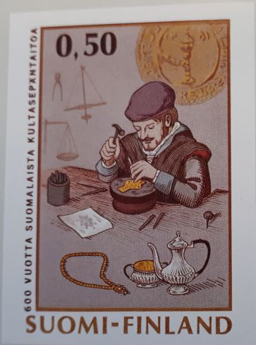

FILATELIAOPPIMATERIAALIA NETISSÄ VUODESTA 1999 LÄHTIENPSYKOLOGIAN PIKALINKIT PSYKAN VIDEOABIKURSSI: PS7 ABI KERTAUSKURSSI (OPS 2016-): PS1 Psyykkinen toiminta ja oppiminen PS2 Kehittyvä ihminen PS3 Tietoa käsittelevä ihminen PS4 Tunteet, psyykkinen hyvinvointi ja mielenterveys PS5 Yksilöllinen ja yhteisöllinen ihminen Kuvassa näkyvä 1970 vuoden luonnonsuojelu postimerkin ehdotelma on mielestäni todella hieno. Hieno oli julkaistukin, mutta itse olisin ehkä sittenkin valinnut tämän painokoneeseen ja kirjekuoriin! Suomi-keräilijän opas! Suomi Finland wantlist Mitä mieltä postimerkkiehdotelmista? DDR-kokoelma BRD-kokoelma Aihekeräily - Luther ja uskonpuhdistus Löytölaatikko? Poltetut postimerkit! Linkkejä postimerkkeilyyn |
Mitä mieltä postimerkkiehdotelmista?Suomessa on julkaistu valtava määrä postimerkkejä. Harvoin tullaan ajatelleeksi, että lähes kaikista merkeistä on tehty monta ehdotelmaa ennen kuin varsinainen merkki on valittu julkaistavaksi. Ihan vain iloksi julkaisen tässä muutaman näistä ehdotelmista ja sitten sen merkin, joka läpäisi valintakomitean hyväksynnän. Se Suomen tunnettu Zeppelin sai lopulta Saimaa-pohjan eikä Olavinlinnaa. Kumpikaan ei kuitenkaan liittynyt Helsinkiin, jossa Zeppelin kävi. Hyvä kysymys onkin, miksi ei pohjamerkiksi valittu tuomiokirkkoa? Vastaus on yksinkertainen: merkiksi valittiin jo julkaistu valmis merkki, johon lyötiin vain lisäpainama. EHDOTELMA: Ja sitten TOTEUTUS: J.W.Snellmanista tehty ehdotelma ei myöskään ollut hullumpi. Tosin, ei toteutuskaan. EHDOTELMA: Ja sitten TOTEUTUS: Ida Aalbergista tehdyssä ehdotelmassa on sekä nimi väärin, että synnyinvuosi väärin. EHDOTELMA: Ja sitten TOTEUTUS: Lähetystyön ehdotelma on jollakin tavalla suloinen ja koskettava, verrattuna kisan voittaneeseen merkkiin. EHDOTELMA: Ja sitten TOTEUTUS: Tullihallituksen merkki vuodelta 1961 oli värikkäämpi ehdotelmana, mutta ehkä juhlallisempi toteutumana. EHDOTELMA: Ja sitten TOTEUTUS: Miltäpä tuntuisi, jos vuoden 1966 näyttelymerkki olisi ollut tällainen? Aikalailla ankea? EHDOTELMA: Ja sitten TOTEUTUS: Mielestäni vuoden 1969 lentoliikenne merkkiehdotelma oli tyylikkäämpi kuin toteutuma. EHDOTELMA: Ja sitten TOTEUTUS: Jos minulta olisi kysytty 8-vuotiaana pikkupoikana tai nyt, kumpi tulisi valita luonnonsuojelumerkiksi, niin ehdottomasti ehdotelma. Se on aivan upea kokonaisuus, tyylitelty, vaikuttava, reilusti julkaistun merkin voittava. EHDOTELMA:  Ja sitten TOTEUTUS: Kultaseppä työssän vai pelkkä tuotos? Ehkä sittenkin tuo pelkkä tuotos? EHDOTELMA: Ja sitten TOTEUTUS: Kyösti Kallio ehdotelma on upea, juhlallinen, presidentillinen. Yksinkertaisempi rintakuva valittiin. EHDOTELMA: Ja sitten TOTEUTUS: Totta kai merkkien valintaan vaikuttaa aikakausi, vallitseva tyyli jne. Melonnan MM-kisamerkki vuodelta 1973 on julkaistuna onnistunut ja tyylikäs. Myöhemmin koemerkkiä hyvin samantapainen melontamerkki julkaistiin vihkomerkkinä joukkoliikunta-sarjassamme vuonna 1989. |